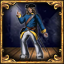

| 伊比利亚 |
| 法兰西 |
| 低地 |
| 不列颠 |
| 北欧及波罗的 |
| 中欧 |
| 北德意志 |
| 南德意志 |
| 意大利 |
| 巴尔干及安纳托利亚 |
| 东欧 |
| 瑞典 | |
| 政府等级 | |
| 主流文化 | |
| 首都 | |
| 政体 | |
| 国教 | |
| 科技组 | |
| 瑞典的理念 |
此信息可能已落后版本，最后更新于1.35 ----
|
| −15% 雇佣兵维护费 +20% 步兵作战能力 |
| +1 陆军将领冲击
|
|
|
瑞典（英文：Sweden）开始时是卡尔马联盟的一个成员。这是一个以  丹麦为主导的统治
丹麦为主导的统治  瑞典和
瑞典和  挪威的共主邦联。然而瑞典可以用它更好的陆军和海军的战略封锁来获取独立。
挪威的共主邦联。然而瑞典可以用它更好的陆军和海军的战略封锁来获取独立。
作为在近代历史中有过突出表现的国家（以及本游戏许多开发人员的祖国），瑞典拥有不容小视的实力以及许多趣味浓厚、效果强力的事件。
瑞典的主流文化属于北欧文化组，可以成立  斯堪的纳维亚。DLC
斯堪的纳维亚。DLC  北方雄狮开启时，瑞典可以通过完成任务“帝国时代”并触发事件“斯堪的纳维亚帝国”，来解除通过该决议所需的
北方雄狮开启时，瑞典可以通过完成任务“帝国时代”并触发事件“斯堪的纳维亚帝国”，来解除通过该决议所需的  行政科技限制（20 级）。
行政科技限制（20 级）。
|
|
这条信息可能已不适合当前版本，最后更新于1.35。 |
不知多少个世纪以来，北方分裂成了多个王国，他们相互攻杀，两败俱伤。先前的联合的尝试最终彻底失败了，那些欧洲邻国应该会相当高兴吧。尽管如此，一个持久的联邦依然可能得以建立……
| 潜在需求 | 接受 |
效果
| |
AI决议因子：
瑞典有数个特有决议。脚本代码位于：/Europa Universalis IV/decisions/SwedishDecisions.txt。
|
|
这条信息可能已不适合当前版本，最后更新于1.34。 |
[Root.GetChurchOrFallbackName]在我国争取独立的道路上提供了不少帮助，然而他们的帮助不是免费的，现在他们要来索取回报了。如果我们要想[Root.Monarch.GetName]顺利登上宝座，就必须偿还欠下他们的债务。
潜在需求
|
接受 |
| 效果 | |
|
|
这条信息可能已不适合当前版本，最后更新于1.34。 |
[Root.GetBurghersOrFallbackName]在我国争取独立的道路上提供了不少帮助，然而他们的帮助不是免费的，现在他们要来索取回报了。如果我们要想[Root.Monarch.GetName]顺利登上宝座，就必须偿还欠下他们的债务。
潜在需求
|
接受
|
效果
| |
|
|
这条信息可能已不适合当前版本，最后更新于1.34。 |
[Root.GetNobilityOrFallbackName]在我国争取独立的道路上提供了不少帮助，然而他们的帮助不是免费的，现在他们要来索取回报了。如果我们要想[Root.Monarch.GetName]顺利登上宝座，就必须偿还欠下他们的债务。
潜在需求
|
接受
|
| 效果 | |
|
|
这条信息可能已不适合当前版本，最后更新于1.34。 |
神圣罗马帝国的新教徒是宗教裁判、公开敌意和帝国皇权区别对待的受害者。但他们缺乏勇气和力量，无法拿起武器捍卫自己、反抗不公待遇。
现在是我们站在宗教改革一边，并且正式宣布支持和保护神圣罗马帝国新教徒的时候了。
潜在需求
|
接受
|
效果
| |
另参见：瑞典基础任务
当DLC  北方雄狮开启时，瑞典拥有一组内容丰富的任务树，主要内容包括赢得独立、统一斯堪的纳维亚、建立波罗的海霸权、海外殖民、创建强悍陆军、发展贸易和矿业等。成立
北方雄狮开启时，瑞典拥有一组内容丰富的任务树，主要内容包括赢得独立、统一斯堪的纳维亚、建立波罗的海霸权、海外殖民、创建强悍陆军、发展贸易和矿业等。成立  斯堪的纳维亚后可以获得额外的独有任务。
斯堪的纳维亚后可以获得额外的独有任务。
未开启DLC时，瑞典仅能使用较简单的基础任务树。
瑞典拥有大量的动态历史事件，涉及其脱离卡尔马联盟独立、创立北方霸权等许多历史事件和其历史上的政治、文化名人。
如果瑞典在事件“古斯塔夫·瓦萨的中央集权改革”中选择了实行改革的选项，就可能触发特有灾难“达克战争”。反对中央集权的  排他主义者叛军将发动起义。DLC
排他主义者叛军将发动起义。DLC  北方雄狮开启时，瑞典可以通过完成任务“农民事务”彻底规避这一灾难。
北方雄狮开启时，瑞典可以通过完成任务“农民事务”彻底规避这一灾难。
|
|
这条信息可能已不适合当前版本，最后更新于1.35。 |
我们的统治者膝下无子且身体羸弱，王位需要一些新鲜的血液。受人爱戴的古斯塔夫二世·阿道夫唯一合法的孩子，克里斯蒂娜·瓦萨，看起来大有前途。有了顾问的指导，瑞典也许可以在她的统治下保持大国的地位。她充满智慧，对科学和艺术有着浓厚兴趣。
触发条件
|
平均发生时间
200 月 |
立即生效
| |
将她送上王位。
在宫廷中给她一个职位——最多是顾问。
| |
|
|
这条信息可能已不适合当前版本，最后更新于1.35。 |
杰曼·德·斯戴尔，一位因其智慧而极负盛名的年轻女子，已经来到了我们的宫廷。她是一位作家、知识分子，因主持了许多沙龙而在法国和瑞典都积攒了相当的名气。她用手中的笔抵抗着崛起中的独裁者拿破仑，她的小说巧妙地暗喻着法国国内自由所处的困境。拿破仑非常尊敬杰曼·德·斯戴尔的天赋，而且还称赞她「教会了人们如何去思考，并提醒了那些已经忘记如何思考的人们」。
|
|
这条信息可能已不适合当前版本，最后更新于1.35。 |
玛丽·沃斯通克拉夫特的智慧吸引了我们的注意。她是一位哲学家，历史学家和小说家，以作品《女权辩护》闻名。这本书清晰地从道德和实用两方面解释了将人权以及政治权利延伸至女性的优点。她认为女人和男人之间在政治和社会上的分隔是不符合常理的。任何一个理性的社会都应该充分利用两性各自的长处。玛丽·沃斯通克拉夫特还声称她在挪威和瑞典旅行时写下的游记正是使得她的丈夫与她坠入爱河的原因。
| 触发条件 | 平均发生时间
200 月 |
立即生效
| |
她的想法令人耳目一新，雇她做顾问！
沃斯通克拉夫特永远不会被遗忘
| |
|
|
这条信息可能已不适合当前版本，最后更新于1.35。 |
「啊，浮游的生命是那么的短暂
日出日落一生便逝去
当晚风拂过你的耳旁
你便能听到我的宿命！
悲伤之中风精灵走过我的坟墓
将我的记忆永远带走
维塔利斯」
贵族政治家约翰·斯奎特让她的女儿温德拉和安娜受到了和她们的兄弟同样的教育，包括了神学，伦理，历史，哲学和地理。温德拉精通拉丁语，法语，德语和希腊语，并与博学的凯瑟琳娜·布里亚通信。她的父母崇敬人文主义者托马斯·摩尔，鹿特丹的伊拉斯谟和胡安·路易·比韦斯，这也是温德拉受到良好教育的原因。她嫁给了在[Root.Monarch.GetTitle]中服役的贵族中将汉斯·凯尔，并时常来到德国陪伴他。在$COUNTRY$，她开办了一家沙龙，并与科学家与艺术家一起进行辩论。她的美丽和智慧被人称颂，也因为当时在女性身上少有的学习和学术能力而闻名。她被乔治·斯提尔汉姆称作「时代的奇迹，女性的奇迹」——这一点在她与饱读诗书的男天主教徒在东普鲁士布劳恩堡的耶稣会学院进行宗教辩论时就能看出。她通过质疑天主教信仰中最神圣的理念，用流利的拉丁语赢得了辩论。
| 触发条件 | 平均发生时间
200 月 |
立即生效
| |
为什么她还没有成为我们的顾问？
她是所有女性学者的标杆！
| |
取得独立支持比获得自由后取得大量盟友容易得多。所以等到你有5个较大同盟的时候再宣战。 英格兰、
英格兰、 法兰西、
法兰西、 勃艮第、
勃艮第、 奥地利、
奥地利、 勃兰登堡、
勃兰登堡、 波兰以及
波兰以及  莫斯科都会支持你独立，前提是你有耐心并且与他们保持100以上的关系直到他们转为友善。取得5个较大盟友可能耗费20年以上，但是这很值得。你应该保持50%以上的独立倾向，这样就没有被合并的危险。早期支持者中，你可以经营以等待他们以后做大的有
莫斯科都会支持你独立，前提是你有耐心并且与他们保持100以上的关系直到他们转为友善。取得5个较大盟友可能耗费20年以上，但是这很值得。你应该保持50%以上的独立倾向，这样就没有被合并的危险。早期支持者中，你可以经营以等待他们以后做大的有  诺夫哥罗德、
诺夫哥罗德、 苏格兰以及
苏格兰以及  条顿骑士团。记住这会让你超过外交关系上限。
条顿骑士团。记住这会让你超过外交关系上限。
这场战争只是小意思，只要等着你的盟友出现并且为你赢下它就好，不要在没有巨大地形奖励的时候战斗，也不要试图获取独立之外的东西。一旦你宣战，你的陆军和海军上限会提高4-6。小心  奥斯曼或者其他列强的介入，但只要你有全部的5个盟友就没有什么问题。你需要的只是
奥斯曼或者其他列强的介入，但只要你有全部的5个盟友就没有什么问题。你需要的只是  丹麦拥有低战争热情和15点战争分数来取得胜利。你很快就能达成要求，
丹麦拥有低战争热情和15点战争分数来取得胜利。你很快就能达成要求， 奥斯曼不能阻挡你。割取任何地区都会让你的盟友不安并延长休战时间。你需要的是一个短时间休战，然后你可以在下一场战争中吞并斯堪的纳维亚的剩余地区。
奥斯曼不能阻挡你。割取任何地区都会让你的盟友不安并延长休战时间。你需要的是一个短时间休战，然后你可以在下一场战争中吞并斯堪的纳维亚的剩余地区。
当DLC 北方雄狮启用后瑞典获得一组丰富的任务树。更容易取得帮助你独立的盟友（4个专属独立前置任务）。开局你就有高达60%左右的独立倾向（当然丹麦会很快资助效忠派）。首先你需要招募一个军事顾问，这可以使你的独立倾向增加25%，并获得一个1/4/4/1的将军并给与全国叛乱度-2的修正持续三十年。分别赋予两个阶层三个特权，这里推荐给市民三个 教士三个 赞助艺术 向市民举债 自由企业或私人贸易舰队 虔诚的外交官 宗教文化（慎用影响力可能下不来拔不掉）。会给与三个选择，如果不想降低正统性就直接选20威望（可以轻蔑的羞辱） 神职大臣或神职顾问委员会招募到陆军上限100%（可以贷款，之后打完只要钱）。当陆军规模达到上限对丹麦发出羞辱（有正威望可以轻蔑的羞辱），选择时机已到，今日起兵，获得10000人力+25%独立倾向，此时独立倾向已满，只要是宿敌丹麦的国家均可以在任务树内实现对瑞典的支持独立通常是
北方雄狮启用后瑞典获得一组丰富的任务树。更容易取得帮助你独立的盟友（4个专属独立前置任务）。开局你就有高达60%左右的独立倾向（当然丹麦会很快资助效忠派）。首先你需要招募一个军事顾问，这可以使你的独立倾向增加25%，并获得一个1/4/4/1的将军并给与全国叛乱度-2的修正持续三十年。分别赋予两个阶层三个特权，这里推荐给市民三个 教士三个 赞助艺术 向市民举债 自由企业或私人贸易舰队 虔诚的外交官 宗教文化（慎用影响力可能下不来拔不掉）。会给与三个选择，如果不想降低正统性就直接选20威望（可以轻蔑的羞辱） 神职大臣或神职顾问委员会招募到陆军上限100%（可以贷款，之后打完只要钱）。当陆军规模达到上限对丹麦发出羞辱（有正威望可以轻蔑的羞辱），选择时机已到，今日起兵，获得10000人力+25%独立倾向，此时独立倾向已满，只要是宿敌丹麦的国家均可以在任务树内实现对瑞典的支持独立通常是 英格兰，
英格兰， 勃艮第，
勃艮第， 勃兰登堡，
勃兰登堡， 波兰，
波兰， 法兰西（这个可能性小一点外交关系不够）时刻注意外交关系上限。（仅需要对你的好感度达到100），就会触发事件，《瑞典独立的支持者》。你可以选择不要任务树里的盟友而是AI提供给你的独立支持（就是自己的力量独立）（或者直接争取所有丹麦的宿敌）独立战争应尽早结束不要割走丹麦的地，可以使其释放挪威或要钱草草了事，停战期结束后再行扩张。因为你会在任务树里获得斯堪的纳维亚的宣称和一点稳定度或者拿下省份甘吉（4165）布雷金（1982）隆德（6）哈兰（26）以便能获得一个为期20年对挪威武力联统的CB（对丹麦的宣战借口）。
法兰西（这个可能性小一点外交关系不够）时刻注意外交关系上限。（仅需要对你的好感度达到100），就会触发事件，《瑞典独立的支持者》。你可以选择不要任务树里的盟友而是AI提供给你的独立支持（就是自己的力量独立）（或者直接争取所有丹麦的宿敌）独立战争应尽早结束不要割走丹麦的地，可以使其释放挪威或要钱草草了事，停战期结束后再行扩张。因为你会在任务树里获得斯堪的纳维亚的宣称和一点稳定度或者拿下省份甘吉（4165）布雷金（1982）隆德（6）哈兰（26）以便能获得一个为期20年对挪威武力联统的CB（对丹麦的宣战借口）。
在战争中你不需要发挥太大的作用只需要圈地就可以了，海军通常有英格兰帮助，丹麦通常只有两个德意志盟友，条顿骑士团或者勃兰登堡还有一个小国和两个属国，你和你的盟友应该可以轻易地击碎他们。
如果你想要扩张至德意志，可以通过加入神圣罗马帝国来避免与神罗皇帝的战争。然而，这需要释放出  芬兰并出售一些省份，所以通常情况下并不值得。如果想支配整个波罗的海，那么瑞典必须克服的障碍之一就是
芬兰并出售一些省份，所以通常情况下并不值得。如果想支配整个波罗的海，那么瑞典必须克服的障碍之一就是  莫斯科/
莫斯科/ 俄罗斯，另一个障碍则是
俄罗斯，另一个障碍则是  波兰/
波兰/ 波兰立陶宛联邦。这里推荐拉上一个打击另一个的方法。与
波兰立陶宛联邦。这里推荐拉上一个打击另一个的方法。与  波兰结盟可以提供一条控制莫斯科地区的途径，反之亦然。
波兰结盟可以提供一条控制莫斯科地区的途径，反之亦然。
当DLC 北方雄狮启用后根据任务树方向先统一斯堪的纳维亚区域，你的敌人包括
北方雄狮启用后根据任务树方向先统一斯堪的纳维亚区域，你的敌人包括 诺夫哥罗德，
诺夫哥罗德， 莫斯科，以及前宗主
莫斯科，以及前宗主 丹麦及其
丹麦及其 挪威，可以优先向
挪威，可以优先向 诺夫哥罗德进行扩张，因为它长期处于
诺夫哥罗德进行扩张，因为它长期处于 莫斯科的扩张范围内，与它作战只需要注意损耗及外界势力的可能。你在任务树会大量获得
莫斯科的扩张范围内，与它作战只需要注意损耗及外界势力的可能。你在任务树会大量获得 诺夫哥罗德地块的宣称。
诺夫哥罗德地块的宣称。
如果在  诺夫哥罗德被完全吞并之前就取得了独立，那么玩家应该抓住机会攻击虚弱的
诺夫哥罗德被完全吞并之前就取得了独立，那么玩家应该抓住机会攻击虚弱的  诺夫哥罗德，在他们与强大得多的
诺夫哥罗德，在他们与强大得多的  莫斯科因关键省份发生争斗之前就取得它们。涅瓦和印格尔曼兰处于首要地位，因为占据他们可以截断俄罗斯通往波罗的海的通道。这会使得保护 里加和
莫斯科因关键省份发生争斗之前就取得它们。涅瓦和印格尔曼兰处于首要地位，因为占据他们可以截断俄罗斯通往波罗的海的通道。这会使得保护 里加和  利沃尼亚骑士团对玩家来说更为容易。你也应该让
利沃尼亚骑士团对玩家来说更为容易。你也应该让  莫斯科取得科拉半岛。AI会经常攻击
莫斯科取得科拉半岛。AI会经常攻击  挪威并在围攻北部的挪威堡垒时损失大量人力，这使得玩家击败
挪威并在围攻北部的挪威堡垒时损失大量人力，这使得玩家击败  莫斯科更为容易。
莫斯科更为容易。
附庸诺夫哥罗德有额外好处，因为早期可以用更低的战争分数和更低的侵略扩张度从莫斯科手上收复诺夫哥罗德的土地。然而，与莫斯科的第一次战争或许并不能将诺夫哥罗德削弱到让瑞典能在一次战争中就附庸它的地步。再一次的战争，可能对手是  莫斯科或者
莫斯科或者  利沃尼亚骑士团，通常足以让
利沃尼亚骑士团，通常足以让  诺夫哥罗德成为附庸。
诺夫哥罗德成为附庸。
独自击败俄罗斯会非常困难，但是如果你有  波兰作为盟友就会容易许多。你也可以尝试与游牧国家同时进攻俄罗斯，因为他们可以帮助击败俄罗斯军队并在和平协议中削弱俄罗斯。这会让以后的战争更佳容易。
波兰作为盟友就会容易许多。你也可以尝试与游牧国家同时进攻俄罗斯，因为他们可以帮助击败俄罗斯军队并在和平协议中削弱俄罗斯。这会让以后的战争更佳容易。
也要从  挪威和
挪威和  丹麦手中取得领土，但是要慢，时刻注意侵略扩张度。
丹麦手中取得领土，但是要慢，时刻注意侵略扩张度。 挪威基本上是俄罗斯的真实写照：割取耶姆特兰以抹平国界，但是除了这之外，值得获取的只有阿克什胡斯和卑尔根胡斯（因为贸易力加成）。你应该早日夺取大西洋岛屿以防
挪威基本上是俄罗斯的真实写照：割取耶姆特兰以抹平国界，但是除了这之外，值得获取的只有阿克什胡斯和卑尔根胡斯（因为贸易力加成）。你应该早日夺取大西洋岛屿以防  英格兰从你手中偷走它们。
英格兰从你手中偷走它们。
你夺走斯堪的纳维亚南部的数个重要省份之后便可以成立 斯堪的纳维亚。
斯堪的纳维亚。
如果你想扩张至德意志，你应该考虑成为皇帝并避免与 奥地利的战争。这可以通过提高关系和与选帝侯们结盟来达成。同时也要考虑解锁影响理念组来避免神罗内的联盟。你也可以考虑在你的独立战争中夺取一个接壤神罗的省份（海上边界），然后和奥地利改善关系，这样你就能加入神罗。
奥地利的战争。这可以通过提高关系和与选帝侯们结盟来达成。同时也要考虑解锁影响理念组来避免神罗内的联盟。你也可以考虑在你的独立战争中夺取一个接壤神罗的省份（海上边界），然后和奥地利改善关系，这样你就能加入神罗。
优良的早期理念组包括影响理念（可减少侵略扩张度），行政理念（可减少造核花费与行政科技花费），或者是革新理念（可减少科技花费）。在解锁这些理念组后，你应该解锁数量理念或进攻理念。它们将给你的+20%步兵作战能力和+5%训练度提供许多增益。如果你想让你的陆军更为强大，在结合质量理念的情况下分别解锁经济理念与革新理念可以得到+5%训练度和+20%步兵作战能力的政策。
在专制主义时代，瑞典拥有专属时代能力瑞典征兵制，准许在他们的+20%人力恢复速度的分配征募制度的基础上获得一个+35%的巨大加成
或者，瑞典可以进行殖民玩法。早期攻取冰岛并选择探索理念或扩张理念使得你可以成为最先到达新世界的人之一，这可以给瑞典因低发展度省份造成的黯淡无光的收入带来帮助。保有  挪威作为一个附庸国是另一个在新世界获得立足点的方法：挪威会进行殖民，然后玩家可以吞并他们以得到他们的殖民地。这通常是个坏主意，因为AI的殖民糟糕透顶且经常用光钱财。
挪威作为一个附庸国是另一个在新世界获得立足点的方法：挪威会进行殖民，然后玩家可以吞并他们以得到他们的殖民地。这通常是个坏主意，因为AI的殖民糟糕透顶且经常用光钱财。
成立斯堪的纳维亚便可轻易避免达克战争灾难，或者保持天主教，再或者转为改革宗。
一个不太为人所知但潜力巨大的开始日期。这个开始日期对玩家有两个非常大的好处。首先，距离经典的1444年开局日期只有5年零9天，所以玩家应该对政治环境非常熟悉。其次，瑞典在开局之时不光处于独立，而且拥有挪威作为被联统国。这是一个对瑞典有利的局势变化。由于瑞典在开局之时已经独立，他们就能在瑞典的专有任务树上执行一些任务。玩家可以在第一天就获得
现在，由于南部由海峡上的堡垒防守，西部由挪威人防守，玩家可能会追求与1444年开局时相同的目标，但他们的防守位置要好得多。
在游戏初期拿下 Neva 和 Ingermanland 总是可取的。 这些省份确保了通往波罗的海国家的陆路，并将在未来使莫斯科从贸易收入中挨饿。 如果有进一步扩张的空间，White Karelia 和 Kexholm 也是很好的选择。怀特卡累利阿（White Karelia）和维堡（Viborg）的两个堡垒创造了一个非常可防御的阻塞点，锁定了整个斯堪的纳维亚半岛。 白卡累利阿，凯克斯霍尔姆和斯科讷三个堡垒创造了一个“堡垒瑞典”，可以帮助玩家抵抗更大的对手或联盟。
西部是奥克尼，是入侵苏格兰的一个非常方便的登陆地。允许挪威在苏格兰的一些领土上进行制造，然后宣布独立，这为不列颠群岛开辟了许多可能性。它有助于扩张你的积极扩张，是一个良好的开端，以扩大下游进入英吉利海峡，并给瑞典一些急需的殖民范围。
一个强大的瑞典依赖于一件事，对波罗的海的控制。要做到这一点，玩家将有3个挑战可以决定他们的战役成败。
首先也是最容易的是果断击败莫斯科。实现这一目标的最简单的方法是将被削弱的诺夫哥罗德并附庸，并将其莫斯科所有的核心给诺夫哥罗德。如果处理得当，这可以在一场战争中完成，并将永远摧毁莫斯科。越早这样做越好，因为莫斯科有滚雪球的趋势。波兰和立陶宛也可以加入进来，让事情变得更容易。
第二个挑战是把波兰(和立陶宛)赶出波罗的海海岸。这可能是一项艰巨的任务，因为他们会与你旗鼓相当。防御性地作战，并利用强大的盟友，如波希米亚、匈牙利或奥斯曼，最终将有助于赢得胜利。
到目前为止，波罗的海的大部分贸易节点应该在您的控制之下。在吕贝克贸易区的所有非人力资源用地也应如此。剩下的就是和神圣罗马帝国皇帝决一死战，征服德国北部的部分地区。在军事意义上，这最后一个障碍对波罗的海的统治地位没有那么大的挑战。然而，这可能是一种政治上的痛苦。占领人力资源地所产生的侵略性扩张是非常有害的，很容易导致大规模的联盟。有两种方法可以解决这个问题。
一个人可以谨慎地前进，在每一场战争中夺取一小部分省份。这样就可以腾出时间来专注于其他事业。玩家可以殖民美洲或在非洲发动战争，同时等待欧洲侵略性扩张的脚步放缓。
另一种选择是解散神圣罗马帝国。要做到这一点，最简单的方法就是把谨慎抛到九霄云外。要解散神圣罗马帝国，必须占领所有选帝侯和皇帝的首都。这可能是相当棘手的，因为选帝侯之间的分歧很大，要让所有选帝侯都反对战争的理由可能很难。与所有选帝侯开战的最快方法就是激怒整个帝国。目标是产生足够的积极扩张，使整个神圣罗马帝国反对你。通过这样做，玩家最终将与皇帝和所有选帝侯开战，这将允许玩家解散帝国。再次强调，防守是关键。用防御地形上的堡垒榨干帝国的血汗，然后用非常专业的攻城部队快速占领所需的首都。尝试获得+5火炮加值和一个攻城领袖。
在击败最后的挑战后，玩家应该是世界上最强大的国家，拥有可观的收入和非常庞大的军队。 玩家将有资源在他们希望的任何方向上进行活动，并且大约需要200-300年。
毁灭性的三十年战争终于结束了。瑞典凭借极其强大的扩张能力成为了北欧强权。 历史上，瑞典从未完全实现过它的理想，按照欧陆风云的标准它的表现平平，直到接下来的大北方战争（1700-21）后它走完它的强权之路为止。在这个剧本里，玩家的任务是通过避免灾难而改变历史进程，以及用扩展瑞典的实力和对后代的影响来代替之。然而，尽管瑞典的强大开局地位和优秀的军事理念与优势，在这个剧本里取得胜利就算对有经验的玩家来说也会是非常困难的。
殖民地：
在1648年瑞典在北美有两个成长中的殖民地，位于现在的新泽西和德拉华附近（新瑞典）。除非玩家想花许多精力去建造一个殖民帝国的话，否则就请把它们立刻卖掉。因为你的地理位置就决定了欧洲大陆事务就是你的主要方向，而你的海军和英国，荷兰等海上强国来说根本不值一提。一般来说，荷兰出的价钱比法国和英国等要好一点。

Lion of the North 北方雄狮 用瑞典开局并领导新教联盟在三十年战争中战胜神罗皇帝。 |

Sweden is not overpowered! 瑞典并不过强！ 用瑞典开局，占领整个波罗的海沿岸地区并拥有核心。 |

Super Trooper 超级士兵 以瑞典开局，启用“分配征募制度”政府改革，同时拥有80队卡尔军与至少40%步兵战斗能力。 |

Assembly Instructions Needed 需要组装说明 成立斯堪的纳维亚，并以神圣罗马帝国皇帝的身份撤销帝国特权。 |
| 伊比利亚 |
| 法兰西 |
| 低地 |
| 不列颠 |
| 北欧及波罗的 |
| 中欧 |
| 北德意志 |
| 南德意志 |
| 意大利 |
| 巴尔干及安纳托利亚 |
| 东欧 |
| 北非 |
| 东非 |
| 中非 |
| 东南非 |
| 西非 |
| 西南非 |
| 近东 |
| 波斯及中亚 |
| 北亚 |
| 东亚 |
| 东南亚 |
| 印度 |
| 中美洲 |
| 墨西哥 |
| 北美东北 |
| 北美东南 |
| 北美中西部 |
| 部落联盟国家 |
| 前殖民领国家 | |
| 海盗共和国 |
| 南美北部 |
| 安第斯山区 |
| 南美东部 |
| 南美南部 |
| 前殖民领国家 |
| 澳大利亚 |
| 南太平洋 | 奥特亚罗瓦 |
| 北太平洋 |
| 前殖民领国家 |